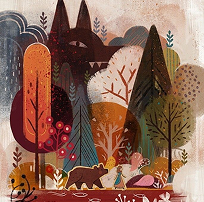
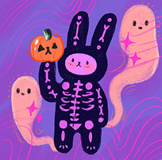
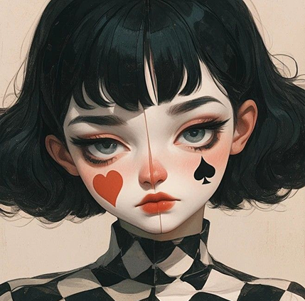

Entre la risa y la melancolía, los payasos revelan lo más humano que intentamos ocultar. Esta serie de ilustraciones explora la contradicción del rostro pintado: la máscara que alegra al público y al mismo tiempo protege la vulnerabilidad del intérprete. A través de trazos expresivos y colores contrastantes, las obras retratan momentos íntimos de quienes viven entre el brillo del espectáculo y el peso de la soledad, recordándonos que incluso detrás del maquillaje más colorido puede habitar una emoción profundamente real.
Cada ilustración es una pausa en medio del espectáculo, un retrato del instante en que el personaje y la persona se confunden. En ellos, el color deja de ser adorno y se vuelve confesión.
  